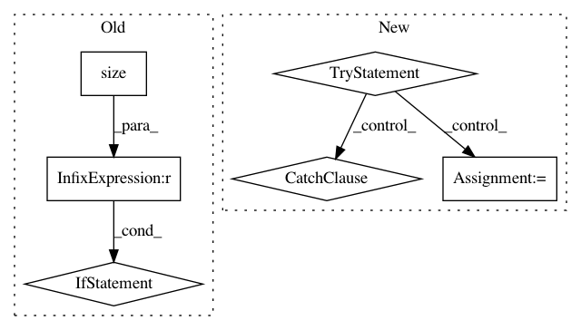

5ae7e24308aa3da597e27bae3f4e6ea28630654f,gpytorch/lazy/interpolated_lazy_tensor.py,InterpolatedLazyTensor,__init__,#InterpolatedLazyTensor#Any#Any#Any#Any#Any#,15
Before Change
left_interp_indices.size(), dtype=base_lazy_tensor.dtype, device=base_lazy_tensor.device
)
else:
if left_interp_indices.size() != left_interp_values.size():
raise RuntimeError(
"Expected left_interp_indices ({}) to have the same size as "
"left_interp_values ({})".format(left_interp_indices.size(), left_interp_values.size())
)
if right_interp_indices is None:
num_rows = base_lazy_tensor.size(-2)
right_interp_indices = torch.arange(0, num_rows, dtype=torch.long, device=base_lazy_tensor.device)
right_interp_indices.unsqueeze_(-1)
After Change
)
if left_interp_indices.shape[:-2] != base_lazy_tensor.batch_shape:
try:
base_lazy_tensor = base_lazy_tensor._expand_batch(left_interp_indices.shape[:-2])
except RuntimeError:
raise RuntimeError(
"interp size ({}) is incompatible with base_lazy_tensor size ({}). ".format(
right_interp_indices.size(), base_lazy_tensor.size()
)
)
super(InterpolatedLazyTensor, self).__init__(
base_lazy_tensor, left_interp_indices, left_interp_values, right_interp_indices, right_interp_values
)
self.base_lazy_tensor = base_lazy_tensor
In pattern: SUPERPATTERN
Frequency: 3
Non-data size: 6
Instances
Project Name: cornellius-gp/gpytorch
Commit Name: 5ae7e24308aa3da597e27bae3f4e6ea28630654f
Time: 2019-03-18
Author: gpleiss@gmail.com
File Name: gpytorch/lazy/interpolated_lazy_tensor.py
Class Name: InterpolatedLazyTensor
Method Name: __init__
Project Name: cesium-ml/cesium
Commit Name: 564c92947efc1707287cd63e1379ffcac2813b5a
Time: 2015-01-23
Author: stefan@sun.ac.za
File Name: mltsp/TCP/Software/feature_extract/Code/feature_interfaces.py
Class Name: FeatureInterface
Method Name: find_extname
Project Name: cornellius-gp/gpytorch
Commit Name: b2951813547426828d313a80c52de8a619e99731
Time: 2018-11-26
Author: gpleiss@gmail.com
File Name: gpytorch/lazy/constant_mul_lazy_tensor.py
Class Name: ConstantMulLazyTensor
Method Name: __init__